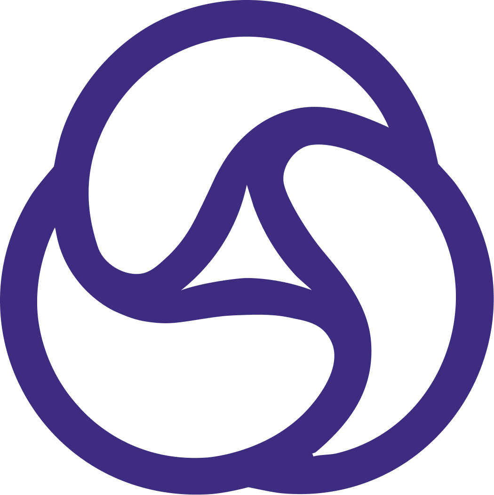

100 conceptos que
todo founder debe
dominar
El glosario + guía visual de startups, de lo más básico a nivel experto. Cada concepto: cómo funciona, una analogía y un ejemplo real de las startups más grandes y de AECODE.

Cada tarjeta te da 3 ángulos del mismo concepto
Recórrela en orden para subir de nivel 1 (fundamentos) a nivel 10 (experto), o salta a un concepto con el índice (tecla O). Pensada para entender, explicar y aplicar.
Un camino de cero a experto en 100 conceptos
| Nivel | Bloque | Qué aprendes | Conceptos |
|---|---|---|---|
| 1 | Fundamentos | Qué es una startup y cómo se valida una idea | 01–10 |
| 2 | Cliente y mercado | A quién sirves y cuán grande es el juego | 11–20 |
| 3 | Producto | Del MVP al Product-Market Fit | 21–30 |
| 4 | Modelo de negocio | Cómo capturas valor y cobras | 31–40 |
| 5 | Unit economics | Si el negocio gana o pierde por unidad | 41–50 |
| 6 | Métricas y crecimiento | Qué medir para crecer de verdad | 51–60 |
| 7 | Growth y GTM | Cómo adquieres clientes a escala | 61–70 |
| 8 | Estrategia y defensa | Por qué nadie te copia | 71–80 |
| 9 | Fundraising y capital | Cómo se financia una startup | 81–90 |
| 10 | Escala y experto | De startup a categoría y exit | 91–100 |
Nivel 1 — Fundamentos
Qué es realmente una startup y cómo se pasa de una corazonada a una idea que el mercado valida.
Startupla empresa diseñada para crecer
El Problemapain point
Propuesta de Valorvalue proposition
Idea vs Oportunidadidea ≠ opportunity
Founder-Market Fitencaje fundador-mercado
Visión y Misiónnorte de largo plazo
Lean Startupbuild–measure–learn
Hipótesis y Experimentossupuestos a probar
MVPproducto mínimo viable
Customer Discoveryvalidación con clientes
Nivel 2 — Cliente y Mercado
A quién le resuelves, qué trabajo le haces y cuán grande es el juego al que entras.
Cliente vs Usuarioquién paga ≠ quién usa
ICPideal customer profile
Buyer Personaarquetipo de comprador
Jobs To Be Doneel trabajo a resolver
Segmentacióndividir el mercado
TAM · SAM · SOMtamaño del mercado
Beachhead Marketmercado playa
Early Adoptersprimeros usuarios
Why Nowel timing
Customer Developmentdesarrollo de clientes
Nivel 3 — Producto
Del primer prototipo al momento mágico en que el mercado tira del producto: Product-Market Fit.
Product-Market FitPMF
Value Proposition Canvasencaje problema-solución
Iteraciónmejora continua
Pivotcambio de rumbo
Roadmaphoja de ruta
Onboarding / Activaciónprimer valor
Aha Momentmomento de revelación
Time to ValueTTV
Wedgeproducto cuña
Productizaciónde servicio a producto
Nivel 4 — Modelo de Negocio
Cómo creas, entregas y —sobre todo— capturas valor: la mecánica de cómo ganas dinero.
Business Model Canvasel lienzo del negocio
Lean Canvascanvas para startups
Revenue Streamsfuentes de ingreso
Pricingestrategia de precio
Freemiumgratis + premium
SaaS / Suscripciónsoftware as a service
Marketplacemercado de dos lados
B2B · B2C · B2B2Ca quién le vendes
Take Ratecomisión
Monetizacióncómo cobras
Nivel 5 — Unit Economics
La pregunta que decide si una startup vive: ¿ganas o pierdes dinero con cada cliente?
Unit Economicseconomía por unidad
CACcosto de adquisición
CAC = gasto en ventas y marketing ÷ nº de clientes nuevosLTVvalor de vida del cliente
LTV = ticket medio × frecuencia × años de retención × margenLTV : CACel ratio que importa
LTV : CAC — sano si es mayor a 3 : 1Payback Periodperiodo de recuperación
Payback = CAC ÷ margen bruto mensual por clienteGross Marginmargen bruto
Contribution Marginmargen de contribución
Burn Rateritmo de quema
Runwaypista de despegue
Runway (meses) = efectivo en caja ÷ burn rate mensualBreak-evenpunto de equilibrio
Nivel 6 — Métricas y Crecimiento
Qué medir para crecer de verdad y no engañarte con números que se ven bien pero no dicen nada.
Vanity vs Actionablemétricas que mienten
North Star Metricmétrica estrella
AARRRpirate metrics
Activaciónel primer éxito
Retenciónque vuelvan
Churntasa de abandono
Cohort Analysisanálisis por cohortes
MRR / ARRingreso recurrente
ARR = MRR × 12NRR · Expansionretención neta de ingresos
Growth Rate · T2D3ritmo de crecimiento
Nivel 7 — Growth y Go-to-Market
Cómo consigues clientes a escala de forma repetible: los motores de adquisición y distribución.
Growth Hackingcrecimiento por experimentos
Funnel · AIDAembudo de conversión
Viral Loop · K-factorviralidad
Network Effectsefecto red
Product-Led Growthcrecimiento por producto
Go-To-Marketestrategia GTM
Inbound · Contentmarketing de atracción
Sales Pipelinepipeline de ventas
NPSnet promoter score
NPS = % promotores (9–10) − % detractores (0–6)Referralboca a boca
Nivel 8 — Estrategia y Defensibilidad
Por qué, una vez que ganas, nadie te puede quitar el mercado: ventajas que se acumulan con el tiempo.
Ventaja Competitivapor qué ganas
Moatfoso defensivo
Flywheelvolante de inercia
Switching Costscostos de cambio
Economías de Escalaventaja por tamaño
Plataforma / Ecosistemanegocio de plataforma
Blue Oceanocéano azul
Data Moatfoso de datos
First Mover vs Fast Followermover primero o seguir
Innovación Disruptivadisruption
Nivel 9 — Fundraising y Capital
Cómo se financia una startup, quién pone el dinero y qué entregas a cambio: el lenguaje del capital.
Bootstrappingcrecer con caja propia
Fundraisinglevantar capital
Etapas de Rondapre-seed a Serie C
Ángel y Venture Capitalquién invierte
Valoracióncuánto vales
% inversionista = inversión ÷ valoración post-moneyCap Tabletabla de capitalización
Diluciónreparto al crecer
SAFE / Convertibleinstrumentos tempranos
Equity · Vesting · ESOPparticipación del equipo
Due Diligenceauditoría del inversor
Nivel 10 — Escala y Experto
De startup que funciona a empresa que define una categoría: escalar, componer ventajas y materializar el valor.
Escalabilidadcrecer sin crecer costos
Blitzscalingescalar a toda velocidad
Scale-upde startup a scale-up
Unicorniovaloración de US$1.000M
Pensamiento 10xmoonshot
Compounding · AI Flywheelventaja que compone
M&Afusiones y adquisiciones
Exitla salida
IPOsalida a bolsa
Category Creationcrear una categoría
De saber los conceptos a construir con ellos
- Domina nivel por nivel: cada uno asume el anterior.
- Para cada decisión, pregunta qué concepto aplica.
- Explica cada idea con su analogía: si no puedes, repásala.
- Wedge → Engine → Moat como tesis de crecimiento.
- North Star: skills verificadas / usuario activo.
- Unit economics: CAC US$35 · LTV:CAC 3.1× · payback 7m.
100 conceptos, una sola disciplina: enamórate del problema, mide lo que importa y construye lo que nadie pueda copiar.